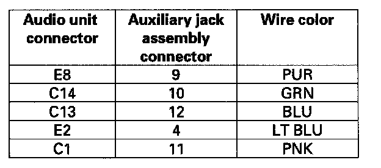

No sound/no display with auxiliary video unit inputs
No sound/no display with auxiliary video unit inputsNOTE:
- Check that the auxiliary device is properly connected, and has fresh batteries or power source connected.
- Do not connect an RCA type shorting plug with the auxiliary jack assembly 14P connector, or system damage may occur.
1. Connect an auxiliary video source, and check the volume/display operation.
Is the display operate properly and does the audio sound normal?
YES - Operation is normal at this time.
NO - Go to step 2.
2. Substitute a known-good auxiliary video unit and recheck.
Does the auxiliary video unit operate properly?
YES - Original auxiliary video unit faulty.
NO - Go to step 3.
3. Check the "CONNECT" of the rear entertainment system self-diagnostic.
Is the auxiliary jack assembly connect condition OK?
YES - Go to step 8.
NO - Go to step 4.
4. Remove the auxiliary jack assembly. Check that the auxiliary jack assembly is properly connected.
Is the auxiliary jack assembly connected properly?
YES - Go to step 5.
NO - Reconnect the connector, and recheck the function.
5. Turn the ignition switch OFF.
6. Disconnect the audio unit connector C (24P), E (16P), and the auxiliary jack assembly 14P connector.
7. Check for continuity between audio unit connector C (24P), E (16P) and body ground according to the table. Then check same terminals for continuity to the harness shield terminals C2 and E1.
Is there continuity?
YES - Short in the wire between the audio unit and the auxiliary jack assembly. Replace the appropriate shielded harness.
NO - Go to step 8.

8. Check for continuity between the audio unit connector C (24P), E (16P) and auxiliary jack assembly 14P connector according to the table.
Is there continuity?
YES - Go to step 9.
NO - Open in the wire between the audio unit and the auxiliary jack assembly. Replace the appropriate shielded harness.
9. Connect an RCA type shorting plug to each audio input (R and L).
NOTE: Do not connect the RCA type shorting plug with the auxiliary jack assembly 14P connected, or system damage may occur.
10. Check for continuity between the following terminals of the auxiliary jack assembly.
Is there continuity?
YES - Go to step 11.
NO - Faulty auxiliary jack assembly.
11. Remove the RCA type shorting plug(s) and check the same terminals again for continuity.
Is there continuity?
YES - Faulty auxiliary jack assembly.
NO - Substitute a known-good audio unit and recheck. If the symptom/indicated goes away, replace the original audio unit. If the symptom is still present, substitute a known-good rear controller and screen and recheck. If the symptom/indicated goes away, replace the original rear controller and screen.